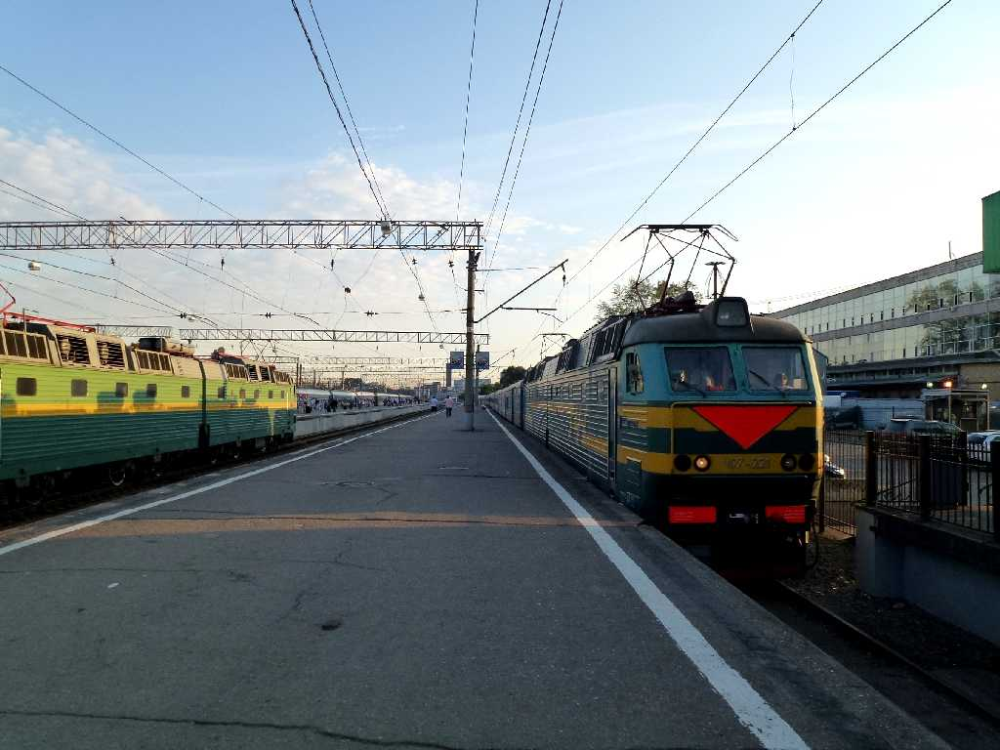
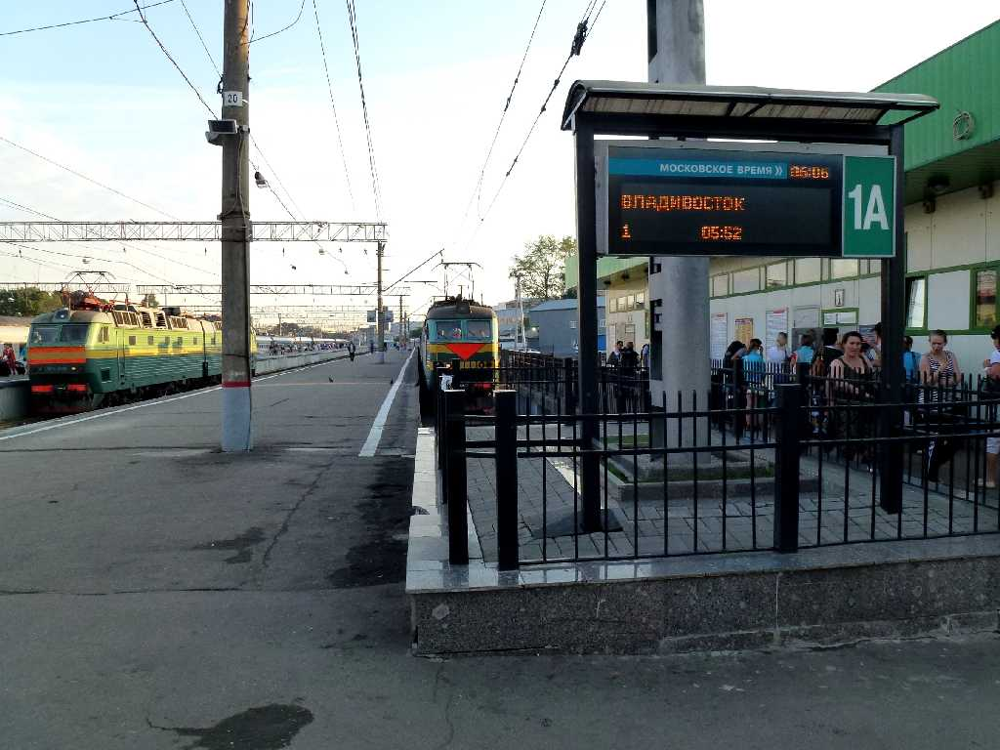
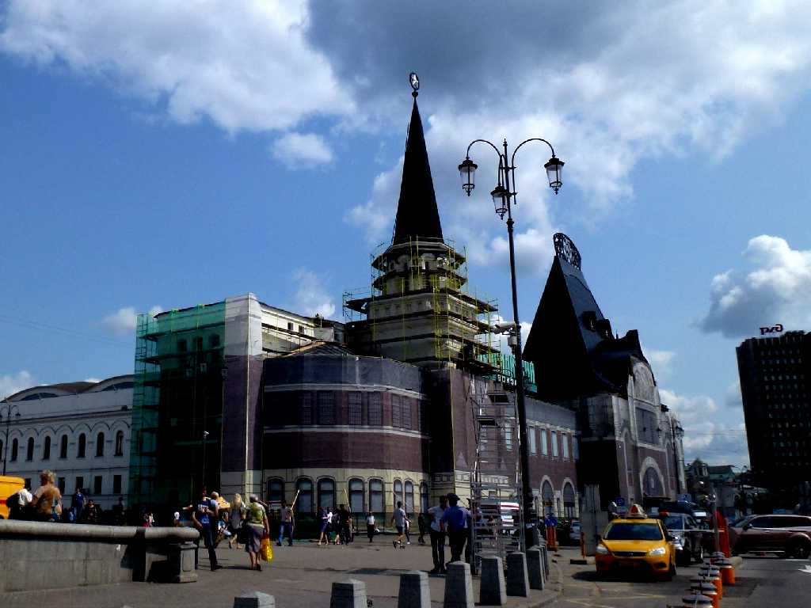

Yaroslavsky Station Moscow
Russia No.1 Timetable Trans Siberian Railway June 26 11:25 Vladivostok to July 2 5:52 Yaroslavsky Moscow
８０日間世界一周鉄道の旅で９日目の今日はウラジオストク駅から６泊７日１４５時間２７分かけ９,２８８ｋｍ走りモスクワのヤロスラフスキー駅に定刻で到着

July 2 2013 Yaroslavsky Station Russia No.1 Trans Siberian Railway

Route Map Trans Siberian Railway

Yaroslavsky Station Moscow

June 7 2017 Yaroslavsky Station Moscow
８０日間世界一周鉄道の旅でウラジオストックから到着して以来４年ぶりの再訪問で隣接のレニングラード駅から寝台列車でペトロザヴォーツクに向かう